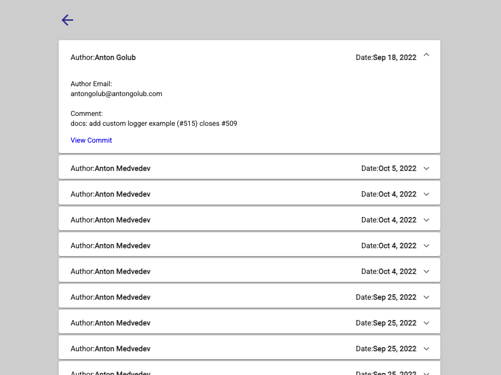

-
1

Album search
Desktop View
The user can view and filter Photos in the currently selected Album. The search filter highlights the suggested options if it matches at least 3 characters of the photo's title in the Album. The data for the project are fetched from here.
The images in the Photo Album can be clicked to open a full-screen preview. The app uses CSS grid to achieve a responsive design. The images are lazy loaded. -
2

GitHub Repsitory Search
Desktop View
The user can search for JS repositories present in the GitHub. The application also shows commits of the last 30 days of corresponding repository. A simple form vaildation is in place. The error dialog shows an intuitive error in case of any API failure.
It makes use of the Neomorphic design pattern for styling. The images are lazy loaded. The GitHub APIs along with the token is used to fetch the data. The app is deployed using Github Pages. -
3

GitHub Repsitory Search Continued
When the user clicks See recent commits! button
The user can view the recent commits of the searched repositories by clicking on the "See recent commits" button. The expansion panel provides insight into the latest commits to the repository. Further, click on the "View Commit" link takes you to the actual commit.
Source Code!